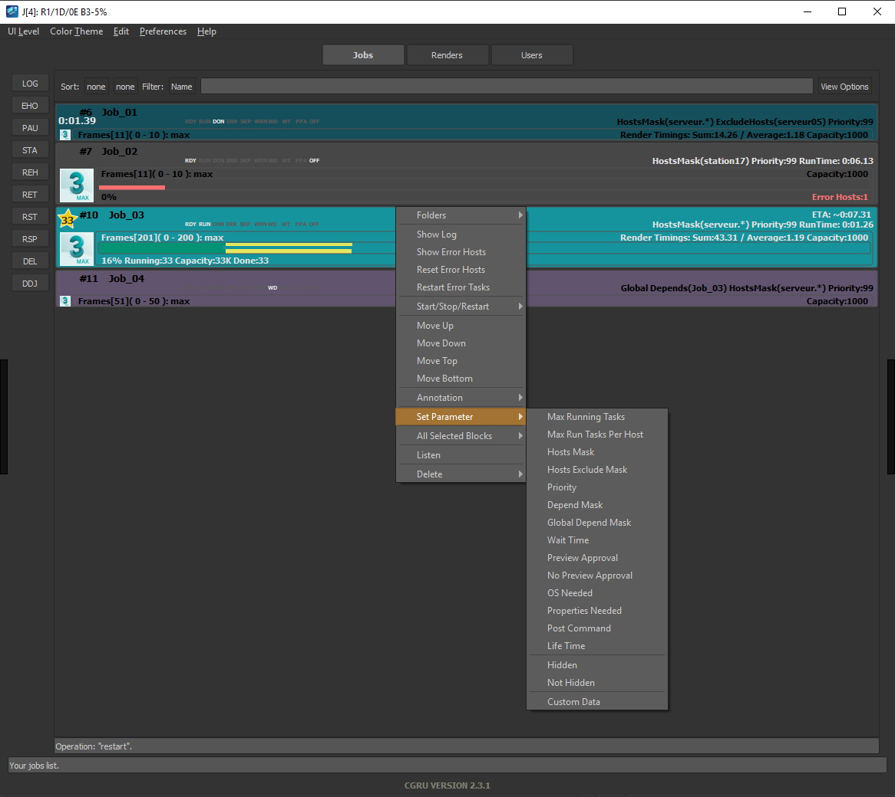

Watch
Interface

Couleurs des progressbar
- Done task
- Running task
- Error task
Couleurs des jobs
Temps de rendus
- ETA (Estimated time of arrival) - temps de rendu restant
- Sum -
- Average - Temps moyen par images
Error Hosts / Avoiding
Si le rendu a un problème de calcul le render passe en Statut Error host, au bout de 3 tentatives il passe en Avoiding Host
Info
Cela peut venir d’un logiciels ou plugins absent sur l’ordinateur en question ou encore un lecteur reseau non accessible sur le render
Show Errors host
Permet de voir la liste des serveur qui ont un problèmes
Reset Error Host
Permet de remettre en service le render si les problèmes on été résolus
Restart errors task
Si des tasks sont passé en rouge on peu les relancer avec ce bouton
Set Parameter
Tip
Il est Possible de modifier plusieurs Jobs simultanément
Host mask/Host exclude mask
- host mask permet d’assigner un job sur une partie des serveur
- host exlude mask permet d’enlèver un ou plusieurs serveurs
règle de naming pour les host mask:
il suffit renseigner le «render name» (visible dans le moniteur ou dans l’onglet renders de la watch) ou d'utiliser des expression régulières
Expressions régulières
examples:
serveur.* - renders qui contiennent le nom “serveur”
station.* - renders qui contiennent le nom “station”
serveur05|serveur08|serveur15 ou serveur(05|08|15) - render 05, 08 et 15
serveur(0[1-9]|1[0-9]|2[0-9]|3[0-2]) - renders 01 à 32
Priority
la puissance de calcul est séparé entre les différents utilisateurs
ordre de priorité 1 est le plus bas niveau et 99 est le plus haut
Global Depends
Permet d'attender la fin d'un job avant de commencer celui ci
Warning
Attention si le nom n'est pas correctement rentré ou que le job n'existe pas encore cette regle sera ignoré et le rendu se calculera normalement